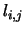

Next: Bayesian Networks and Probabilistic
Up: Bayesian Net approach to
Previous: Introduction
MRF model leading to Bayesian Network Formulation
Let
represent the set of interpretations
that can be given to the nodes
of the graph .
Assume that each of the random variable takes a value for a finite sample
space
.
 represents the set of labels
that we would like to give to .
Let
the set of feature measurements made over the cliques
of be
,
where
.
As seen earlier represents an individual
feature measurement made on the clique .
Let denote the domain
knowledge.
The
image labelling problem can then be
formulated as the following optimization
problem :
Given , find such that
where is the a posteriori pdf of the interpretation
()
given the domain knowledge ()
and the feature measurements ().
Using Theorem 3.1 due to Hammeresley-Clifford,
we have,
where
where
, namely restricted to the
clique .
The set of cliques can be partitioned into sets
of cliques with nodes in
each clique.
For a planar graph
. If we set
where is a normalizing constant. Now we can express (4.1)
as
where is a constant.
Bayes theorem allows us to write
where denotes the a priori pdf.
It is reasonable to consider the individual feature measurements
to be independent given the interpretations
and the domain knowledge.
Hence, we can write
Also assuming that the a priori distributions of the interpretations and
the feature measurements and the domain knowledge are constant we can write
(4.4) as
where is a constant.
Substituting (4.5) in (4.3) we get
Since
using (4.6) we can write the joint distribution function
of the interpretations and the feature measurements as
the product of a number of conditionals. So
where  is a constant which depends upon the a priori distributions
of the interpretations and the feature measurements.
This aspect is utilized in bringing
out the equivalence between a particular Bayesian network and the
MRF.
is a constant which depends upon the a priori distributions
of the interpretations and the feature measurements.
This aspect is utilized in bringing
out the equivalence between a particular Bayesian network and the
MRF.
Next: Bayesian Networks and Probabilistic
Up: Bayesian Net approach to
Previous: Introduction
2004-02-10